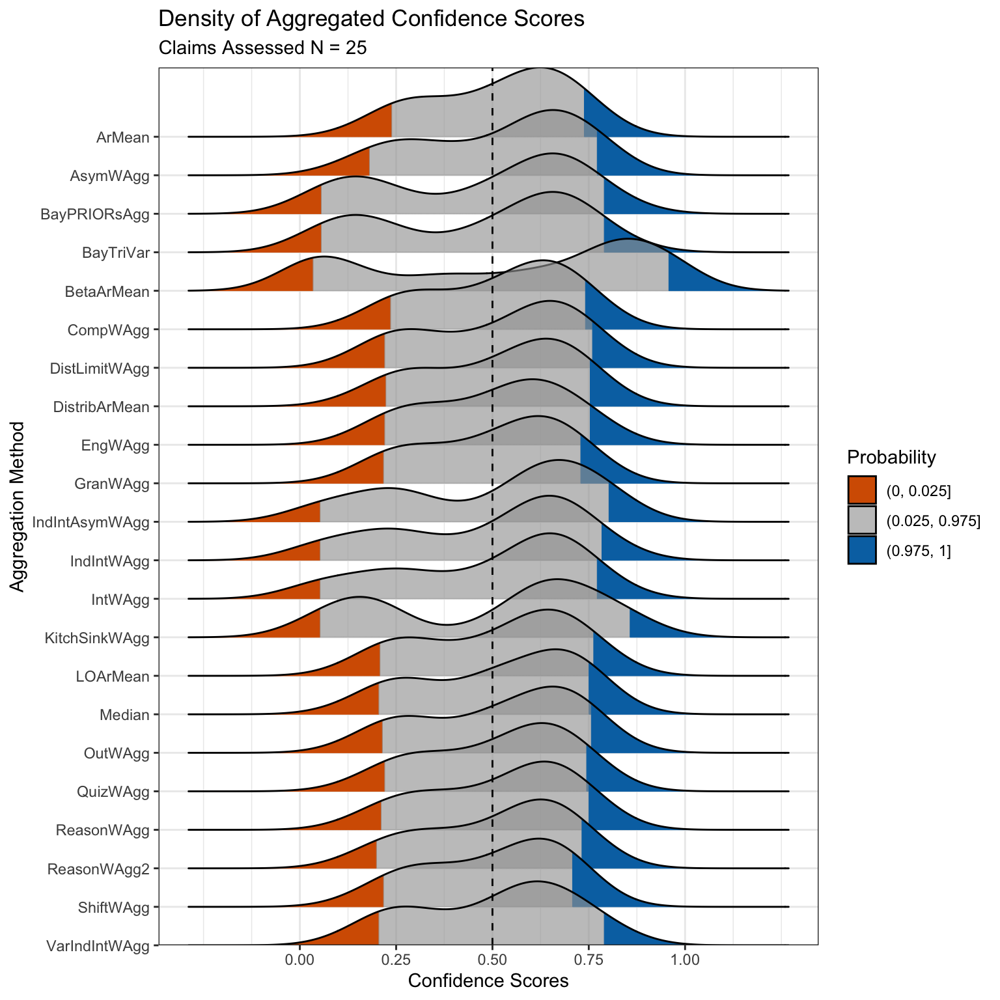
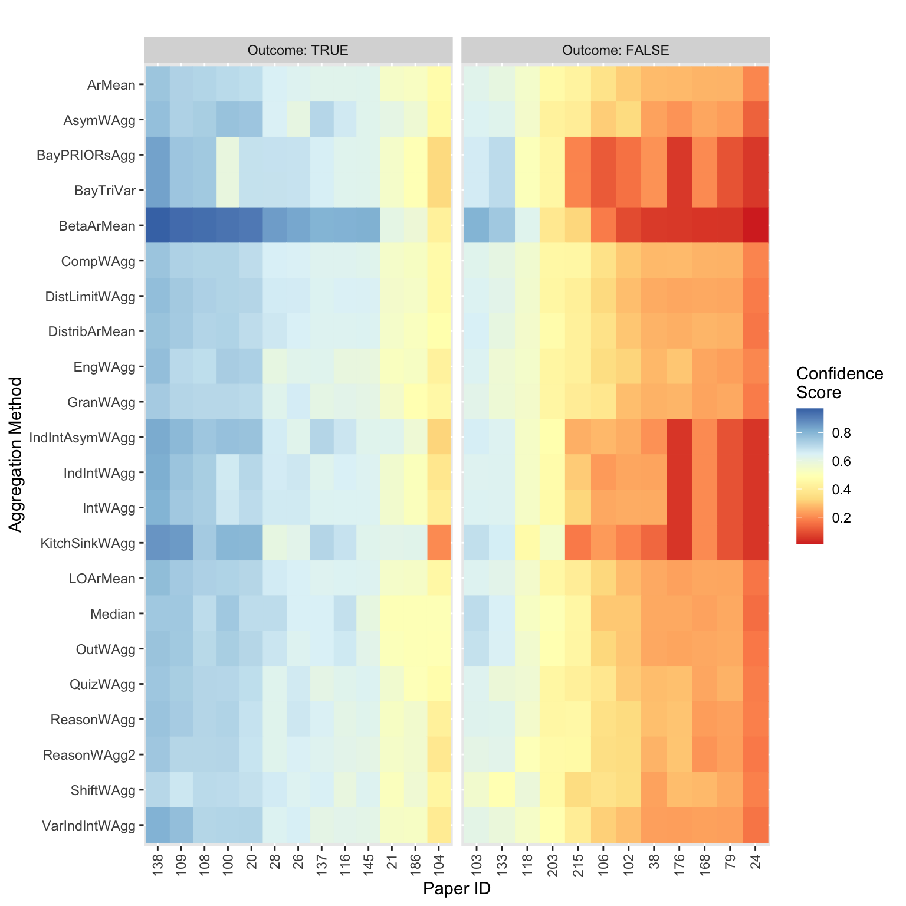

![]()
library(aggreCAT)
library(tidyverse)Expert judgements and forecasts are playing an increasingly important role in a variety of fields such as ecological management and decision making1, biosecurity risk analyses2, replicability forecasts3, and horizon scanning exercises4. Eliciting judgements from multiple experts is always preferable to relying on single estimates, but it comes with the challenge of aggregating different opinions. Achieving behavioural consensus amongst a group of experts, i.e. continued deliberation until everyone agrees on the same answer, is difficult, time consuming, and not always appropriate when multiple, valid viewpoints exist. The alternative is to make use of mathematical consensus, whereby data from a group of experts is mathematically aggregated into a single score.
Aggregated elicited judgements form a critical component of decision-making across multiple contexts, but there has been a dearth of accessible tools for implementing anything more complex than linear averages. Existing software options are either closed-source, locked behind paid software licenses, non-reproducible, or written in programming languages scantly used by ecologists or metascientists. Methods implemented in R, one of the most widely used programming languages in the life sciences5, are also limited, either being small in scope or having been archived from CRAN over the years.
Elicitation at scale: The SCORE program and a need for easy and reliable aggregation methods
{aggreCAT} was initially developed as part of the repliCATS (Collaborative Assessment of Trustworthy Science) project within the international DARPA SCORE program (Systemizing Confidence in Open Research and Evidence). As part of SCORE, repliCATS used expert elicitation to evaluate the replicability of 4000 research claims published in the social and behavioural sciences (the results of which have just been released, see Mody et al. 20263). {aggreCAT} arose out of a need for a software solution to reliably conduct mathematical aggregation at scale. While originally a bespoke implementation for repliCATS, we have since developed {aggreCAT} into a more general R package to handle most types of elicitation data requiring mathematical aggregation allowing for wider applicability.
What does {aggreCAT} offer?
{aggreCAT} is an open, reliable, and modular R package for the mathematical aggregation of expert elicitation data with a straightforward user interface6. {aggreCAT} provides a suite of 29 aggregation methods that explore different approaches to mathematical aggregation from straightforward arithmetic calculations to Bayesian statistical models. In addition, we provide extra functionality such as plotting functions and performance evaluation against known outcomes. While the repliCATS project uses the IDEA protocol to structure their elicitation process, we have generalised {aggreCAT} to work with a variety of elicitation protocols. {aggreCAT} fills a large void in open software for aggregating elicited judgements, providing enormous benefit to researchers and decision makers across any field of research.
Using {aggreCAT}
{aggreCAT} v1.1.0 is available on CRAN while a development version is maintained on GitHub (metamelb-repliCATS/aggreCAT). For the walkthrough below we make use of the {aggreCAT}’s inbuilt datasets, which were originally published in Wintle et al. (2023)7. This study served as a pilot of the repliCATS approach to the SCORE program and consists of evaluations by 25 experts of 25 published papers that underwent attempted replication.
Load Packages
Look at the data object
All aggregation methods require a data frame input of the elicited data, and we’ve included data_ratings in the package as an example dataset. Let’s take a look:
data_ratings# A tibble: 6,880 × 7
round paper_id user_name question element value group
<chr> <chr> <chr> <chr> <chr> <dbl> <chr>
1 round_1 100 7l8m7dmjdb direct_replication three_point_lower 30 UOM1
2 round_1 100 7l8m7dmjdb involved_binary binary_question -1 UOM1
3 round_1 100 7l8m7dmjdb belief_binary binary_question -1 UOM1
4 round_1 100 7l8m7dmjdb direct_replication three_point_best 40 UOM1
5 round_1 100 7l8m7dmjdb direct_replication three_point_upper 45 UOM1
6 round_1 100 7l8m7dmjdb comprehension likert_binary 5 UOM1
7 round_1 100 bvpgcjm09w direct_replication three_point_lower 60 UOM1
8 round_1 100 bvpgcjm09w direct_replication three_point_upper 90 UOM1
9 round_1 100 bvpgcjm09w direct_replication three_point_best 75 UOM1
10 round_1 100 bvpgcjm09w comprehension likert_binary 7 UOM1
# ℹ 6,870 more rowsThe data frame is in long format with six required columns (group here is additional and ignored). The full details are explained in ?data_ratings, but these columns represent the structure of an IDEA protocol elicitation. You have an elicitation round, IDs for paper and elicitation participant, names of questions and elements (we support three-point elicitation questions), and then the value of the participants’ responses. While set up this way to support the IDEA protocol, {aggreCAT} isn’t limited to that elicitation format. As we’ll show later, we have some function arguments to allow for other elicitation styles.
Mathematical aggregation
Once you have a dataset in the correct format, conducting the mathematical aggregation is straightforward. All aggregation methods are grouped by type into a series of wrapper functions with a *WAgg() naming convention (where WAgg is short for ‘weighted aggregation’ and * indicating the group). To start with, let’s just do a simple arithmetic mean aggregation with the AverageWAgg() function:
AverageWAgg(expert_judgements = data_ratings)── AverageWAgg: ArMean ─────────────────────────────────────────────────────────── Pre-Processing Options ──ℹ Round Filter: TRUEℹ Three Point Filter: TRUEℹ Percent Toggle: FALSE# A tibble: 25 × 4
method paper_id cs n_experts
<chr> <chr> <dbl> <int>
1 ArMean 100 70.6 25
2 ArMean 102 30.8 25
3 ArMean 103 62.5 25
4 ArMean 104 47.1 25
5 ArMean 106 36.5 25
6 ArMean 108 71.8 25
7 ArMean 109 72.5 25
8 ArMean 116 62.6 25
9 ArMean 118 54.8 25
10 ArMean 133 59.9 25
# ℹ 15 more rowsThe output of all *WAgg() functions is a four-column data frame. The name of the chosen aggregation method, the ID of the elicitation being aggregated, the aggregated elicitation value (known as a confidence score), and the number of experts whose elicitation was aggregated. ArMean, the arithmetic mean aggregation method, is the default method for AverageWAgg() but we can use the type argument to apply a different aggregation method. Let’s aggregate using the median value instead:
AverageWAgg(expert_judgements = data_ratings,
type = "Median")── AverageWAgg: Median ─────────────────────────────────────────────────────────── Pre-Processing Options ──ℹ Round Filter: TRUEℹ Three Point Filter: TRUEℹ Percent Toggle: FALSE# A tibble: 25 × 4
method paper_id cs n_experts
<chr> <chr> <dbl> <int>
1 Median 100 75 25
2 Median 102 30 25
3 Median 103 70 25
4 Median 104 50 25
5 Median 106 30 25
6 Median 108 70 25
7 Median 109 75 25
8 Median 116 69 25
9 Median 118 53 25
10 Median 133 65 25
# ℹ 15 more rowsYou may have noticed the list of pre-processing methods that are output to the console marked with an icon. Every *WAgg() function has a different combination of options available, which let the user toggle certain behaviours on or off to suit their chosen elicitation style. IDEA is a two round elicitation where only the second round of data gets used in the aggregation, but the round_2_filter argument lets you turn this step off if you wanted to retain both rounds, or if you used a single round elicitation approach. The percent_toggle argument lets you convert percentages into probabilities because the original requirements for {aggreCAT} included the need to accept elicited probabilities as percentages. By keeping round_2_filter set to FALSE you can aggregate other elicitation data formats (e.g. counts) but note that some aggregation methods are only applicable to probabilistic data.
cs_ArMean <- AverageWAgg(expert_judgements = data_ratings,
type = "ArMean",
percent_toggle = TRUE,
round_2_filter = TRUE)── AverageWAgg: ArMean ─────────────────────────────────────────────────────────── Pre-Processing Options ──ℹ Round Filter: TRUEℹ Three Point Filter: TRUEℹ Percent Toggle: TRUELet’s generate confidence scores for several aggregation methods. First, we’ll use IntervalWAgg() and the IntWAgg aggregation type to perform a weighted aggregation where participants are weighted based on the width of their supplied uncertainty bounds.
cs_IntWAgg <- IntervalWAgg(expert_judgements = data_ratings,
type = "IntWAgg",
percent_toggle = TRUE,
round_2_filter = TRUE)── IntervalWAgg: IntWAgg ───────────────────────────────────────────────────────── Pre-Processing Options ──ℹ Round Filter: TRUEℹ Three Point Filter: TRUEℹ Percent Toggle: TRUENext, we’ll use ReasoningWAgg() and the ReasonWAgg method to conduct a weighted aggregation based on the number of unique reasons the participant used to justify their numeric estimates. This method requires a supplementary dataset of these coded reasons to calculate a weight, which exists as an example dataset called data_supp_reasons.
cs_ReasonWAgg <- ReasoningWAgg(expert_judgements = data_ratings,
reasons = data_supp_reasons,
type = "ReasonWAgg",
percent_toggle = TRUE,
round_2_filter = TRUE)── ReasoningWAgg: ReasonWAgg ───────────────────────────────────────────────────── Pre-Processing Options ──ℹ Round Filter: TRUEℹ Three Point Filter: TRUEℹ Percent Toggle: TRUEJoining with `by = join_by(paper_id)`
Joining with `by = join_by(paper_id, n_experts)`Finally, we will use LinearWAgg() and the Participant type to conduct a weighted aggregation using a user-supplied weight that applies at the participant level. Here we create our QuizWAgg method where we weight users based on how well they performed on a quiz they completed prior to conducting the full elicitation. The data_supp_quiz object supplies several different ways that participant quiz responses were scored as different columns and we just need to specify which scoring method is to be used as the weight.
cs_QuizWAgg <- LinearWAgg(expert_judgements = data_ratings,
type = "Participant",
weights = data_supp_quiz |>
rename(weight = quiz_score),
name = "QuizWAgg",
percent_toggle = TRUE,
round_2_filter = TRUE)── LinearWAgg: QuizWAgg ────────────────────────────────────────────────────────── Pre-Processing Options ──ℹ Round Filter: TRUEℹ Three Point Filter: TRUEℹ Percent Toggle: TRUEPerformance evaluation
The confidence_score_evaluation() function evaluates the performance of the aggregation methods when there are known outcomes, or “truth” values to be evaluated against. In our case, data_outcomes provides a binary value indicating whether a replication attempt for a given paper was successful or not.
confidence_score_evaluation(confidence_scores = bind_rows(cs_ArMean,
cs_IntWAgg,
cs_QuizWAgg,
cs_ReasonWAgg),
outcomes = data_outcomes)# A tibble: 4 × 5
method AUC Brier_Score Classification_Accuracy Correlation
<chr> <dbl> <dbl> <dbl> <dbl>
1 ArMean 0.936 0.152 0.84 0.747
2 IntWAgg 0.929 0.137 0.84 0.725
3 QuizWAgg 0.942 0.148 0.84 0.756
4 ReasonWAgg 0.891 0.154 0.84 0.719This function currently calculates performance using four different metrics: AUC, Brier Score, classification accuracy, and a point-biserial correlation. Performance by each metric is calculated separately for each aggregation method.
Visualisation
Finally, we have several basic visualisation functions to let you explore your data. First, we use confidence_score_ridgeplot() to generate a ridge plot of the aggregated scores across a full suite of aggregation methods, using the data_confidence_scores object. With this plot we can see the distribution of scores generated by each aggregation method for the 25 papers being assessed. This visualisation lets us identify which aggregation methods are returning different, or similar, scores. Here we can see that the BayesianWAgg() and IntervalWAgg() methods are generating stronger negative scores, while BetaArMean(), an extremising method, returns stronger positive and negative scores.
confidence_score_ridgeplot(confidence_scores = data_confidence_scores)
Here we use confidence_score_heatmap() to generate a heatmap of the aggregated scores across a number of aggregation methods, using the data_confidence_scores object, and split by the replication study result within data_outcomes.
confidence_score_heatmap(confidence_scores = data_confidence_scores,
data_outcomes = data_outcomes)
{aggreCAT}’s example dataset included some infamous replication studies, so many participants were likely familiar with the outcomes of some or all replication studies before they gave their own estimates. We can see this playing out in the heatmap visualisation, where studies that did replicate mostly had scores above 0.5, while studies that failed to replicate were mostly below 0.5. It also reveals that behaviour was consistent across participants because this pattern largely holds across the different aggregation methods weighting by different behavioural characteristics. The exceptions to this are the methods found in IntervalWAgg(), which weights based on the user’s self-reported uncertainty, and BetaArMean() which uses a beta distribution to extremise participant scores to account for participant tendencies to provide conservative estimates. Both aggregation methods demonstrate much stronger “will not replicate” signals in the scores.
What is next for {aggreCAT}?
While {aggreCAT} is perfectly functional in its current form we are always looking for ways to improve it. We have generalised the package functionality to work beyond the IDEA protocol elicitation formats alone, but there are still some hold-over naming conventions for dataset columns or function arguments that could be more generic, which will eventually be changed. We’re also working on some new aggregation methods to be included in future package versions. As a teaser, I have an early version of an aggregation method that implements Cooke’s classical method8, a method for combining elicited probability distributions. We also have plans to improve and expand visualisation functions. Some of these are new functions based on plots we’ve created for publications, some of them are feature updates to existing functions to allow for some more user customisation.
We’re always happy to hear from existing and would-be users about any additional features that would help them conduct their own research or practitioners conducting their own elicitations. If you have any requests, you can submit them as an issue on our GitHub repository and we can add them to our to do lists, or you’re welcome to submit pull requests with additional features that you’ve coded up that we will review and evaluate for inclusion in the package down the line. Finally, we are contactable by email should you have any queries about the package, or about our research at MetaMelb.
References
1.
Legge, S., Rumpff, L., Woinarski, J.C.Z., Whiterod, N.S., Ward, M., Southwell, D.G., Scheele, B.C., Nimmo, D.G., Lintermans, M., Geyle, H.M., et al. (2022). The conservation impacts of ecological disturbance: Time-bound estimates of population loss and recovery for fauna affected by the 20192020 australian megafires. Global Ecology and Biogeography 31, 2085–2104. https://doi.org/10.1111/geb.13473.
2.
Wittmann, M.E., Cooke, R.M., Rothlisberger, J.D., Rutherford, E.S., Zhang, H., Mason, D.M., and Lodge, D.M. (2015). Use of structured expert judgment to forecast invasions by bighead and silver carp in lake erie. Conservation Biology 29, 187–197. https://doi.org/10.1111/cobi.12369.
3.
Mody, F., Wilkinson, D.P., Fraser, H., Fidler, F., Bishop, M.M., Burgman, M., Bush, M., Chen, Y., Dreber, A., Goldfedder, B., et al. (2026). Large-scale human predictions of the replicability of published social and behavioural science papers – a multi- study analysis. https://doi.org/10.31222/osf.io/vgyed_v1.
4.
Sutherland, W.J., Barnard, P., Broad, S., Clout, M., Connor, B., Côté, I.M., Dicks, L.V., Doran, H., Entwistle, A.C., Fleishman, E., et al. (2017). A 2017 horizon scan of emerging issues for global conservation and biological diversity. Trends in Ecology & Evolution 32, 31–40. https://doi.org/10.1016/j.tree.2016.11.005.
5.
Gao, M., Ye, Y., Zheng, Y., and Lai, J. (2025). A comprehensive analysis of r’s application in ecological research from 2008 to 2023. Journal of Plant Ecology 18, rtaf010. https://doi.org/10.1093/jpe/rtaf010.
6.
Gould, E., Gray, C.T., Willcox, A., O’Dea, R.E., Groenewegen, R., and Wilkinson, D.P. (2026). aggreCAT: An r package for mathematically aggregating expert judgments. MetaArXiv [Preprint]. https://doi.org/10.31222/osf.io/74tfv_v2.
7.
Wintle, B.C., Smith, E.T., Bush, M., Mody, F., Wilkinson, D.P., Hanea, A.M., Marcoci, A., Fraser, H., Hemming, V., Thorn, F.S., et al. (2023). Predicting and reasoning about replicability using structured groups. Royal Society Open Science, 1–24. https://doi.org/10.1098/rsos.221553.
8.
Cooke, R.M. (1991). Experts in uncertainty: Opinion and subjective probability in science (Oxford University Press).